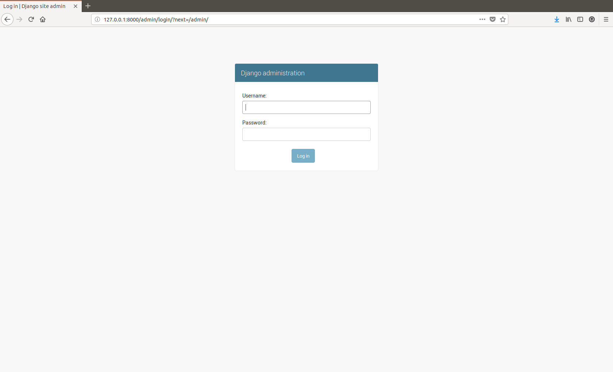
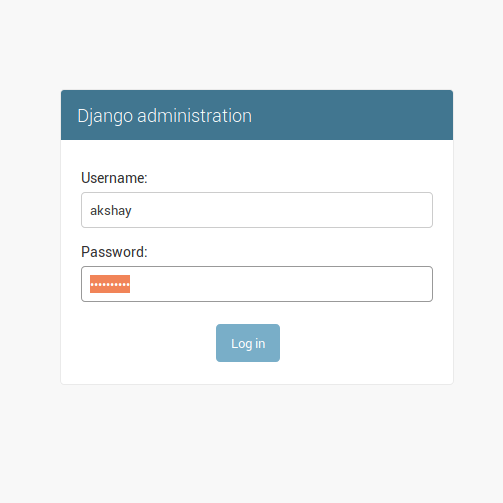
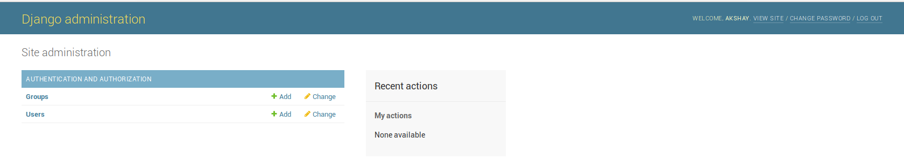
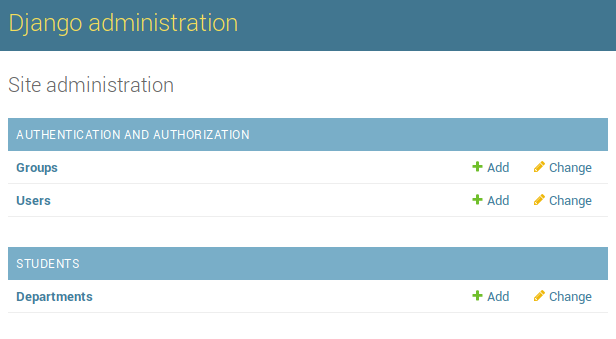
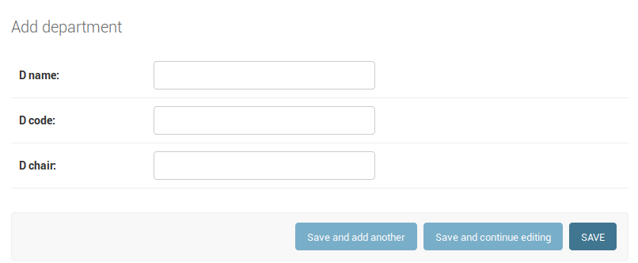
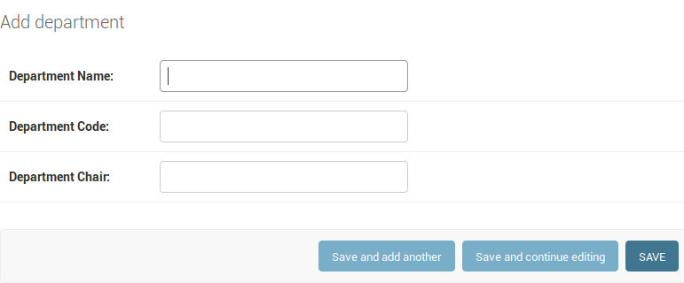
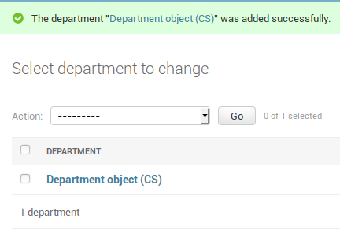
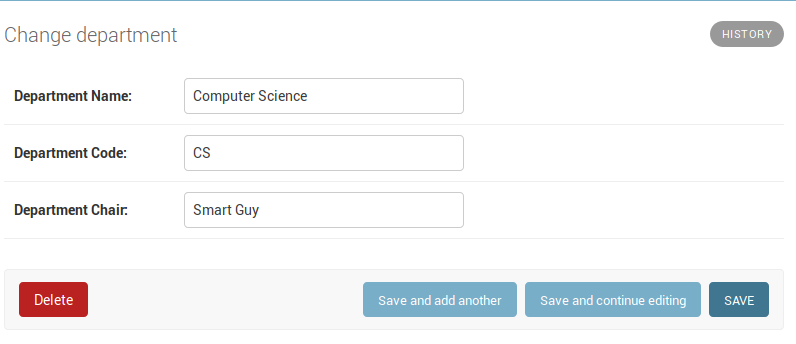

As a sanity check, we want to see the model on our website. For
that, there is a very handy "admin" site that is provided by the
framework. To view the admin site, the url that you want to
go to is "127.0.0.1:8000/admin" (you should have your server
running in the background as discussed earlier). You will see
a login screen:

At this point, since we don't have an admin account setup in the
project, we will create one. To do that, just type the following
in the terminal:
$ python manage.py createsuperuser --username akshay --email gaur.akshay@gmail.com (Make sure you run this where you have the manage.py file).
You will be asked to provide the password for this admin account
which will create the admin account.
Once you are done making the account, use the username and password
to login to the admin interface we visited earlier.


Here you can see what things you can do. We can see that we can add
groups and users in this interface. BUT WAIT!!! Where is our model
that we added earlier? Where are my departments???
To be able to see our models in this interface, we need to register
them in the project.
To add our "Department" model so that we can access it in the admin
model, we need to go to students/admin.py class and register it there.
from django.contrib import admin
# Add this:
from students.models import Department
admin.site.register(Department)
And that's it! Now, if you go back to the admin screen, you should
see you model!

If you click on the add link, you will be taken to "Add Department"
screen:

Here, you can see that django automatically guesses the field names
from the model entries that we made earlier (d_name, d_code, d_chair).
Since they don't look very good, we will change them. Just add the
keyword "verbose_name" followed by the name that you would like to be
displayed on the admin site like so:
d_name = models.CharField(max_length=200, verbose_name="Department Name")
d_code = models.CharField(max_length=5, primary_key=True, verbose_name="Department Code")
d_chair = models.CharField(max_length=200, verbose_name="Department Chair")
After saving these changes, let us refresh the page that we were on before:

Let us add a department as a model. Enter name, code and chair as you see fit.
I added them and then clicked on the save button provided.
**NOTE** In the screenshot, the department is listed as "Department object (CS)" which is wrong. It should have said "Computer Science"
instead. This is because I was incorrectly using __unicode__ to return the string representation of the object which was the case
with python 2. Going forward with python 3, the only method that needs to be written for the string representation of the object is
__str__. Details here.

If you click on the department object you can see its details. You can aldo
edit the object's details if you want to.
